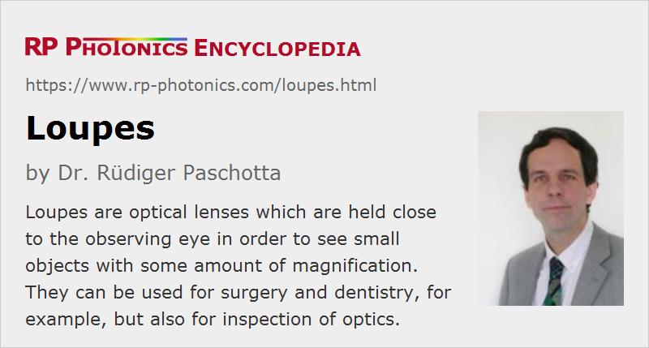

Loupes
Definition: optical lenses held close to the eye which are used for viewing objects with some moderate magnification
Alternative term: hand lenses
More general term: lenses
German: Lupen
Categories: general optics, vision, displays and imaging
How to cite the article; suggest additional literature
Author: Dr. Rüdiger Paschotta
Loupes are a simple optical devices used for viewing details of objects with some magnification. In contrast to a magnifying glass, a loupe is used in a close distance from the eye, is typically smaller and has a shorter focal length. It essentially consists of a single lens, or sometimes on a compact combination of lenses, which modify the path of light by refraction. The optics are typically surrounded by some plastic mount which can be held between two fingers or fixed at the eye.
Loupes may be used for the inspection of optical elements, e.g. before and after cleaning operations, but also for other types of small objects e.g. in jewelry, biology, electronics and watchmaking. Specialized loupes, often of binocular type, are used in surgery and dentistry.
Imaging Methods and Magnification
The imaging properties of a loupe must always be considered in conjunction with those of the human eye. The magnification of the obtained virtual image is defined as the ratio of the apparent object sizes as observed with and without the loupe. It is not only a property of the loupe, since it also depends on how the device is used:
Loupe Close to the Relaxed Eye
We first consider the common situation that a loupe is placed in front of the eye of the observer, assuming that the eye is relaxed, i.e. accommodated for viewing objects at large distances. The loupe can then collimate light emerging from object points in a distance from the lens which is its focal length, and such light can be focused by the eye's optical system to the retina. The distance between the eye and the loupe is actually not critical in this configuration. The distance between the object and the loupe is adjusted such that one can well accommodate to obtain a sharp image. It is thus not necessary to adapt a loupe to the eye, as it is required for reading glasses.
The magnification is calculated by comparing with the situation of direct viewing in a distance of 250 mm from the eye, to which a young healthy eye can easily accommodate. The analysis shows that the obtained magnification is 250 mm divided by the focal length of the loupe. Obviously, the focal length should be well below 250 mm in order to achieve a significant magnification. For example, a magnification of 5 is obtained for a 50-mm lens.
This configuration is also well usable with an older eye, which can no longer accommodate to shorter observation distances. Effectively, the loupe compensates for the loss of accommodation, and even allows accommodation of the old eye to shorter distances than with a healthy unaided eye. In that sense, it helps the older eye more than one might expect from the specified magnification.
Loupe Close to the Focused Eye
Even closer observation distances are possible when the eye itself accommodates to shorter distances, effectively adding some dioptric power to that of the loupe. In that case, the magnification for the healthy eye is increased by 1, compared with the previously discussed situation. That of course would not work with an old eye.
Magnifying Glass in Larger Distance, Closer to the Object
For reading books with small letters, for example, one may hold some magnifying glasses in a significant distance from the eye, closer to the read text. The term magnifying glass is then more appropriate than loupe. When calculating the magnification based on a comparison of observation with and without the magnifying glass, but each time from the same relatively large distance, one obtains the magnification to be 1 plus the ratio of image distance and focal length.
Forms of Loupes
As a loupe is usually held quite close to the observing eye, a handle as that of a magnifying glass would not be particularly useful. Instead, one often holds a loupe simply between two fingers or fixes it at the eye. Some loupes are mounted like reading glasses – then normally with one loupe per eye –, so that no hand is required to hold them. Such instruments are called dental loupes or surgical loupes, for example, depending on the intended field of application. Other loupes have a cylindrical mount which allows one simply to place them on a horizontal object, e.g. a postal stamp.
Simple loupes with moderate magnification (e.g. 4-fold) are often made as biconvex lenses. If a loupe should have a larger size, it is advantageous to use an aspheric lens. There are also achromatic loupes, which can have a large magnification but tend to produce substantial image distortions.
Sometimes, ocular lenses (eyepieces) as used in microscopes or telescopes, for example, are also called loupes.
Suppliers
The RP Photonics Buyer's Guide contains 3 suppliers for loupes. Among them:
Questions and Comments from Users
Here you can submit questions and comments. As far as they get accepted by the author, they will appear above this paragraph together with the author’s answer. The author will decide on acceptance based on certain criteria. Essentially, the issue must be of sufficiently broad interest.
Please do not enter personal data here; we would otherwise delete it soon. (See also our privacy declaration.) If you wish to receive personal feedback or consultancy from the author, please contact him e.g. via e-mail.
By submitting the information, you give your consent to the potential publication of your inputs on our website according to our rules. (If you later retract your consent, we will delete those inputs.) As your inputs are first reviewed by the author, they may be published with some delay.
See also: magnifying glasses, lenses, magnification, ocular lenses
and other articles in the categories general optics, vision, displays and imaging
|  |
If you like this page, please share the link with your friends and colleagues, e.g. via social media:
These sharing buttons are implemented in a privacy-friendly way!